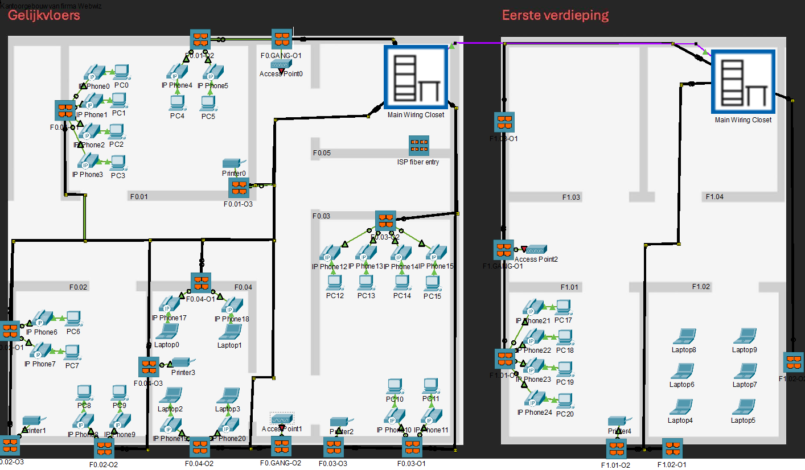

Voor dit project moesten we voor een fictieve onderneming een nieuw plan opstellen voor de bekabeling van hun nieuw netwerk op kantoor.
Projectbeschrijving
Het begon eigenlijk met in Packettracer een layout te maken het gebouw en de 2 verdiepingen. De serverkamers werden ingedeeld met de juiste componenten en de kabels en outlets naar de end-points werden geplaatst. Terijl ik dit deed hield ik de verschillende patchpanels bij in een excel document. Als dit klaar was moest alleen nog een aankooplijst gemaakt worden van de nodige materialen en een gedetailleerde versie van de serverkasten zelf.
Wat heb ik geleerd
De voornaamste skill die ik heb bijgeleerd is basic werkt doen met Packettracer. Welke apparaten er zijn, hoe ze werken en hoe je ze met elkaar kan verbinden. Daarnaast kreeg ik ook meer inzicht over wat gebruikelijk is bij kantoren van die grootte. Ook de documentatie was natuurlijk al een goede introductie in hoe dit proffesioneel gedaan wordt.